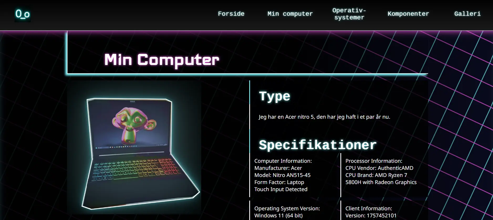
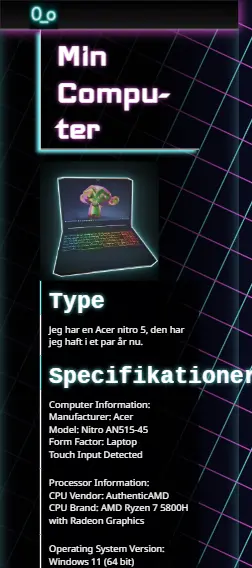

Tema 2
Første side og Repository
I vores første projekt skulle vi lave en side om vores egen komputer og dens specs, med fokus på CSS og at lave grids.
 Vi blev introduceret for validatorer samt lavede vi css øvelser, lærte mere om fonts og design. Vi kiggede på squoosh og hvilke formater vi skal bruge, webp osv.